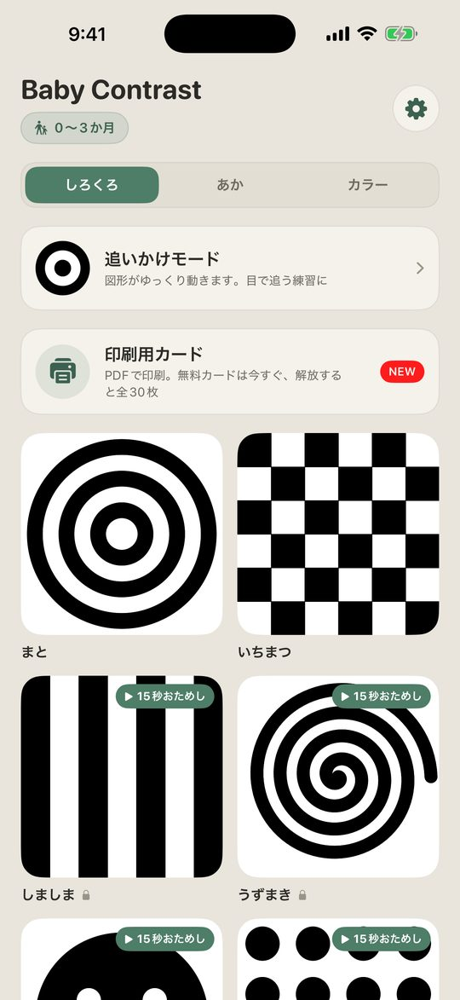
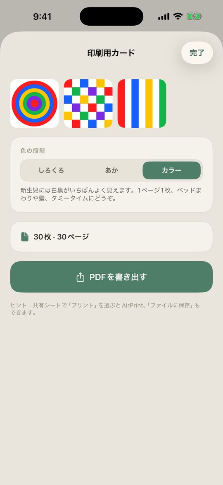
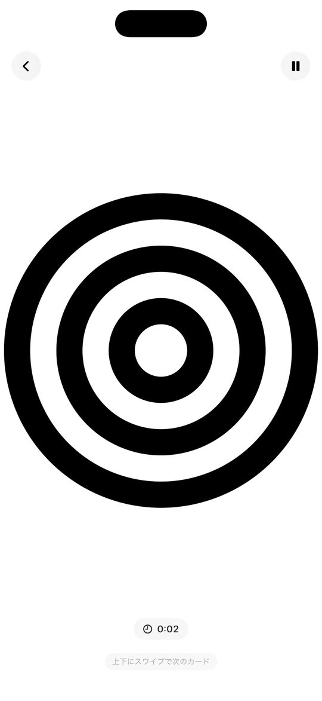
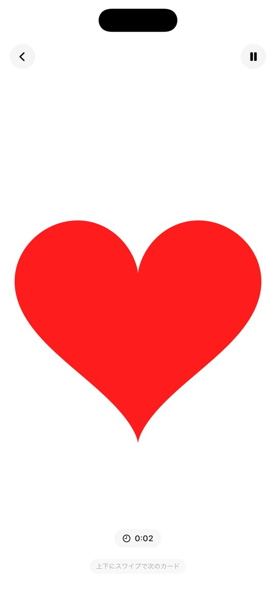
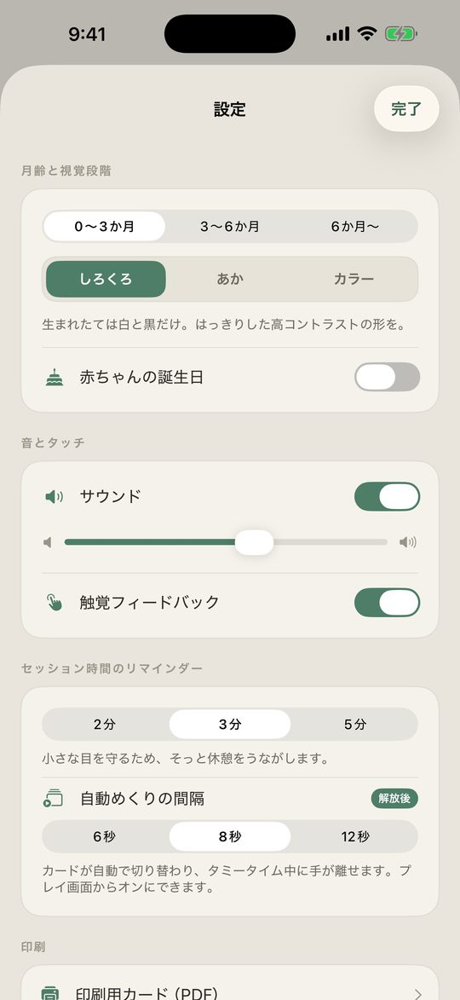

新生児の視覚を育てる知育コントラスト
赤ちゃんの目の発達に合わせた、さわると反応する白黒コントラストあそび。広告なし・オフライン・買い切り。
App Store からダウンロード無料でダウンロード。追加機能は買い切り（¥800）で解放できます。

新生児は白黒、約3か月から赤、約6か月からカラフルな色へ。
ふくらむ・回る・反転・キラキラ。音も毎回すこしずつ変わります。
近くでもはっきり見える、太くシンプルな図形。激しい点滅はしません。
短い時間で楽しめるよう、そっと休憩をうながすタイマー付き。
カードをPDFで書き出して、ベッドまわりや壁、タミータイムに。
カードが自動で切り替わり、タミータイム中に手が離せます。




生まれたばかりの赤ちゃんは、はっきりしたコントラストの世界を見ています。Baby Contrastは、その時期の発達を「さわると反応する能動的なあそび」に変えるアプリです。
全画面の高コントラストカードを赤ちゃんに見せると、タップするたびに図形がやさしく動き、やわらかい音が鳴ります。ただ眺めるだけの受け身の動画ではなく、赤ちゃん自身が「起こす」あそびです。
Baby Contrast の特長
親にもやさしい
無料カード2枚と毎日1枚のおまけカード、ロック中のカードも15秒だけおためしできます。一度の購入で全30枚の高コントラストカード・自動めくり・印刷用カードがずっと使えます。
無料でダウンロード。追加機能は買い切り（¥800）で解放できます。
iPhone（App Store から入手）。
メール suportapps44@gmail.com までご連絡ください。